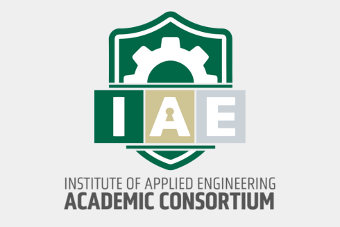

Contract Vehicle
DEVCOM ARL

Nexus of Innovation · A methodology read
The September 2025 award brought sixteen parallel research competencies under a single five-year vehicle, from cybersecurity and trusted AI to quantum sciences and digital twins. Tony Lattanze is standing up the AI-for-cognitive-augmentation work. The Rapid Engineering Lab is pushing prototypes on fast cycles, and the Government Service Internship program has moved more than seven hundred students through DoD-adjacent projects since 2018.
That is a serious operation, and the binding constraint on its throughput is rarely the engineering. It is the cost of reconstructing project context every time a PI rotates, an intern onboards, or a deliverable moves between a faculty lab and the REL.
At three concurrent lanes the tax is manageable. At sixteen, running in parallel under a single five-year vehicle with cleared and uncleared team members cycling through, the tax compounds across the portfolio. Context reconstruction becomes the hidden line item in every deliverable estimate.
Across client engagements, the working premise holds remarkably steady:
The discipline that matters is knowing which layer a given problem belongs on. Applied to IAE, the orchestration layer worth investing in is not another model. It is the structured context that sits underneath every model, every human, and every handoff.
The Interpretable Context Methodology (ICM) treats agent context as a layered filesystem: identity at L0, operating rules at L1, reference material at L2, project state at L3, and working artifacts at L4. The same structure that makes an agent interpretable also makes a research project interpretable to the next person who has to touch it.
For IAE the map is direct. Each of the sixteen ARL lanes becomes a structured context folder that survives PI rotation, intern transition, and cross-facility handoff. The context is written once, browsable by both humans and agents, and version-controlled the way the engineering work already is.
The paper and repository: github.com/RinDig/Interpretable-Context-Methodology-ICM-. For the AI-governance thread running through Lattanze's trusted-AI work, the Ethics Engine is a psychometric assessment tool for evaluating ideological and moral patterns in LLMs, available at arxiv.org/abs/2510.11742 and github.com/RinDig/AuditEngine.
Jake Van Clief is a Marine Corps veteran (eight years, cryptographic systems and F-35 and F-18 avionics), holds an MSc in Future Governance from the University of Edinburgh, and has published in ACM TiiS (ICM) and arXiv (Ethics Engine). Jake also built an online community to 22,000 members in five weeks.
Next Step
Bring one of the sixteen ARL lanes and one recurring handoff that eats time inside it. We will walk through how ICM would structure the context for that lane on the call, and whether a workshop for Lattanze's team and the Academic Consortium is the right first step.
Direct link: https://calendly.com/thecro-eduba/30min
Matt Creamer, Chief Revenue Officer, Eduba. For the technical thread, Jake Van Clief can join the same call.